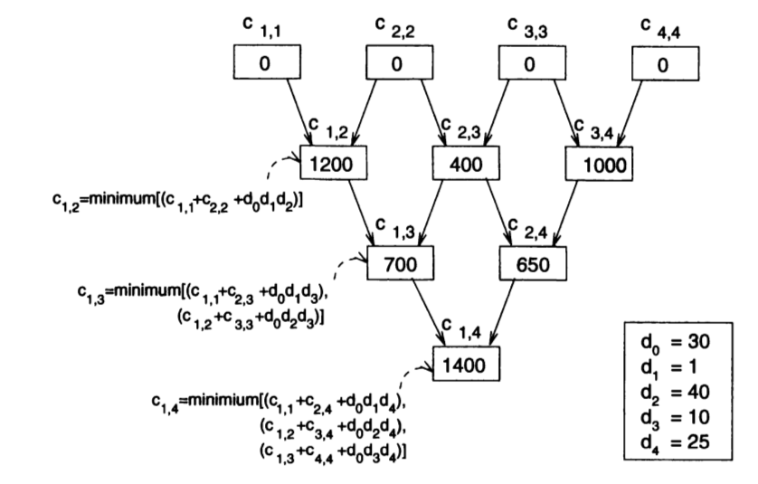

Tema 24: Programación dinámica
Índice
1. Programación dinámica
1.1. Introducción a la programación dinámica
- Inconveniente de la técnica divide y vencerás: la posibilidad de crear idénticos supbroblemas y repetición del trabajo.
- Idea de la programación dinámica: resolver primero los subproblemas menores, guardar los resultados y usar los resultados de los subproblemas intermedios para resolver los mayores.
Definición de Fibonacci por divide y vencerás.
fib 0 = 0 fib 1 = 1 fib n = fib (n-1) + fib (n-2)
Cálculo de
(fib 4)por divide y vencerásfib 4 / \ +-----+ +--+ | | fib 3 fib 2 / \ / \ fib 2 fib 1 fib 1 fib 0 / \ fib 1 fib 0Calcula 2 veces (fib 2) y 3 veces (fib 1) y (fib 0).</p>
Cálculo de
(fib 4)por programación dinámicafib 0 | fib 1 | | +-----+=== fib 2 | | +-----+=== fib 3 | | +-----+=== fib 4
1.2. El patrón de la programación dinámica
Cabecera del módulo:
module Dinamica (module Tabla, dinamica) where
Librerías auxiliares
-- Hay que elegir una implementación de TAD Tabla -- import TablaConFunciones as Tabla import TablaConListasDeAsociacion as Tabla -- import TablaConMatrices as Tabla import Data.Array
El patrón de la programación dinámica
dinamica :: Ix i => (Tabla i v -> i -> v) -> (i,i) -> Tabla i v dinamica calcula cotas = t where t = tabla [(i,calcula t i) | i <- range cotas]
- Notas:
(calcula t i)es el valor del índiceicalculado a partir de los anteriores que ya se encuentran en la tablat.cotasson las cotas de la matrizten la que se almacenan los valores calculados.
2. Fibonacci como ejemplo de programación dinámica
2.1. Definición de Fibonacci mediante programación dinámica
Importación del patrón de programación dinámica
import Dinamica
(fib n)es el n-ésimo término de la sucesión de Fibonacci, calculado mediante programación dinámica. Por ejemplo,fib 8 == 21
Su definición es
fib :: Int -> Int fib n = valor t n where t = dinamica calculaFib (cotasFib n)
(calculaFib t i)es el valor de i-ésimo término de la sucesión de Fibonacci calculado mediante la tabla t que contiene los anteriores. Por ejemplo,calculaFib (tabla []) 0 == 0 calculaFib (tabla [(0,0),(1,1),(2,1),(3,2)] 4 == 3
Además,
λ> dinamica calculaFib (0,6) Tbl [(0,0),(1,1),(2,1),(3,2),(4,3),(5,5),(6,8)]
Su definición es
calculaFib :: Tabla Int Int -> Int -> Int calculaFib t i | i <= 1 = i | otherwise = valor t (i-1) + valor t (i-2)
(cotasFib n)son las cotas del vector que se necesita para calcular el n-ésimo término de la sucesión de Fibonacci mediante programación dinámica.cotasFib :: Int -> (Int,Int) cotasFib n = (0,n)
(fibR n)es el n-ésimo término de la sucesión de Fibonacci calculado mediante divide y vencerás.fibR :: Int -> Int fibR 0 = 0 fibR 1 = 1 fibR n = fibR (n-1) + fibR (n-2)
Comparación:
λ> fib 30 832040 (0.01 secs, 0 bytes) λ> fibR 30 832040 (6.46 secs, 222602404 bytes)
fibses la lista de los términos de la sucesión de Fibonacci. Por ejemplo,take 10 fibs == [0,1,1,2,3,5,8,13,21,34]
Su definición es
fibs :: [Int] fibs = 0:1:[x+y | (x,y) <- zip fibs (tail fibs)]
(fib' n)es el n-ésimo término de la sucesión de Fibonacci, calculado a partir de fibs. Por ejemplo,fib' 8 == 21
Su definición es
fib' :: Int -> Int fib' n = fibs!!n
Comparaciones:
λ> fib 30 832040 (0.02 secs, 524808 bytes) λ> fib' 30 832040 (0.01 secs, 542384 bytes) λ> fibR 30 832040 (6.46 secs, 222602404 bytes)
3. Producto de cadenas de matrices (PCM)
3.1. Descripción del problema PCM
- Para multiplicar una matriz de orden m x p y otra de orden p x n se necesitan m x n x p multiplicaciones de elementos.
- El problema del producto de una cadena de matrices (en inglés, "matrix chain multiplication") consiste en dada una sucesión de matrices encontrar la manera de multiplicarlas usando el menor número de productos de elementos.
Ejemplo: Dada la sucesión de matrices
A (30 x 1), B (1 x 40), C (40 x 10), D (10 x 25)
las productos necesarios en las posibles asociaciones son
((AB)C)D 30 x 1 x 40 + 30 x 40 x 10 + 30 x 10 x 25 = 20700 A(B(CD)) 40 x 10 x 25 + 1 x 40 x 25 + 30 x 1 x 25 = 11750 (AB)(CD) 30 x 1 x 40 + 40 x 10 x 25 + 30 x 40 x 25 = 41200 A((BC)D) 1 x 40 x 10 + 1 x 10 x 25 + 30 x 1 x 25 = 1400 (A(BC))D 1 x 40 x 10 + 30 x 1 x 10 + 30 x 10 x 25 = 8200
3.2. El algoritmo del PCM
- El PCM correspondiente a la sucesión d(0), …, d(n) consiste en encontrar la manera de multiplicar una sucesión de matrices A(1), …, A(n) (tal que el orden de A(i) es d(i-1) x d(i)) usando el menor número de productos de elementos.
- Sea c(i,j) el mínimo número de multiplicaciones necesarias para multiplicar la cadena A(i), …, A(j) (1 ≤ i ≤ j ≤ n).
Relación de recurrencia de c(i,j):
c(i,i) = 0 c(i,j) = minimo {c(i,k)+c(k+1,j)+d(i-1)*d(k)*d(j) | i ≤ k < j}- La solución del problema es c(1,n).

3.3. Solución del PCM mediante programación dinámica
Importación de librerías auxiliares:
import Dinamica
Cadenarepresenta el producto de una cadena de matrices. Por ejemplo,P (A 1) (P (A 2) (A 3)) == (A1*(A2*A3)) P (P (A 1) (A 2)) (A 3) == ((A1*A2)*A3)
Su definición es
data Cadena = A Int | P Cadena Cadena instance Show Cadena where show (A x) = "A" ++ show x show (P p1 p2) = concat ["(",show p1,"*",show p2,")"]
Los índices de la matriz de cálculo son de la forma
(i,j)y sus valores(v,k)dondeves el mínimo número de multiplicaciones necesarias para multiplicar la cadena A(i), …,A(j) ykes la posición donde dividir la cadena de forma óptima.type IndicePCM = (Int,Int) type ValorPCM = (Int,Int)
(pcm ds)es el par formado por el mínimo número de multiplicaciones elementales para multiplicar una sucesión de matrices A(1), …, A(n) (tal que el orden de A(i) es d(i-1) x d(i) y ds = [d(0), …,d(n)]). Por ejemplo,pcm [30,1,40,10,25] == (1400,(A1*((A2*A3)*A4)))
Su definición es
pcm :: [Int] -> (Int, Cadena) pcm ds = (v, cadena t 1 n) where n = length ds - 1 t = dinamica (calculaPCM ds) (cotasPCM n) (v,_) = valor t (1,n)
(calculaPCM ds t (i,j))es el valor del índice(i,j)calculado a partir de la listadsde dimensiones de las matrices y la tablatde valores previamente calculados.calculaPCM :: [Int] -> Tabla IndicePCM ValorPCM -> IndicePCM -> ValorPCM calculaPCM ds t (i,j) | i == j = (0,i) | otherwise = minimum [(fst(valor t (i,k)) + fst(valor t (k+1,j)) + ds!!(i-1) * ds!!k * ds!!j, k) | k <- [i..j-1]]
(cotasPCM n)son las cotas de los índices para el producto de una cadena de n matrices.cotasPCM :: Int -> (IndicePCM,IndicePCM) cotasPCM n = ((1,1),(n,n))
(cadena t i j)es la cadena que resultar de agrupar las matrices A(i), …, A(j) según los valores de la tablat.cadena :: Tabla IndicePCM ValorPCM -> Int -> Int -> Cadena cadena t i j | i == j-1 = P (A i) (A j) | k == i = P (A i) (cadena t (i+1) j) | k == j-1 = P (cadena t i (j-1)) (A j) | otherwise = P (cadena t i (k-1)) (cadena t k j) where (_,k) = valor t (i,j)
(pcm' ds)es la lista de los índices y valores usados en el cálculo del mínimo número de multiplicaciones necesarias para multiplicar una sucesión de matrices A(1), …,A(n) (tal que el orden de A(i) es d(i-1) x d(i) y ds = [d(0), …, d(n)]). Por ejemplo,λ> pcm' [30,1,40,10,25] [((1,1),(0,1)),((1,2),(1200,1)),((1,3),(700,1)),((1,4),(1400,1)), ((2,2),(0,2)),((2,3),(400,2)),((2,4),(650,3)), ((3,3),(0,3)),((3,4),(10000,3)), ((4,4),(0,4))]
Su definición es
pcm' :: [Int] -> [((Int, Int), ValorPCM)] pcm' ds = [((i,j),valor t (i,j)) | i <- [1..n], j <- [i..n]] where n = length ds - 1 t = dinamica (calculaPCM ds) (cotasPCM n)
3.4. Solución del PCM mediante divide y vencerás
(pcmDyV ds)es la solución del PCM correspondiente adsmediante divide y vencerás. Por ejemplo,pcmDyV [30,1,40,10,25] == (1040,(A1*((A2*A3)*A4)))
Su definición es
pcmDyV :: [Int] -> (Int, Cadena) pcmDyV ds = cadenaDyV ds 1 n where n = length ds - 1
cadenaDyV ds i j)es la solución del PCM correspondiente a [d(i), …, d(j)]. Por ejemplo,cadenaDyV [30,1,40,10,25] 1 4 == (1040,(A1*((A2*A3)*A4))) cadenaDyV [30,1,40,10,25] 2 4 == (650,((A2*A3)*A4))
Su definición es
cadenaDyV :: [Int] -> Int -> Int -> (Int, Cadena) cadenaDyV ds i j | i == j = (0, A i) | i == j-1 = (ds!!(i-1)*ds!!i*ds!!j, P (A i) (A j)) | k == i = (v, P (A i) (subcadena (i+1) j)) | k == j-1 = (v, P (subcadena i (j-1)) (A j)) | otherwise = (v, P (subcadena i (k-1)) (subcadena k j)) where (v,k) = minimum [((valor i k) + (valor (k+1) j) + ds!!(i-1) * ds!!k * ds!!j, k) | k <- [i..j-1]] valor p q = fst (cadenaDyV ds p q) subcadena p q = snd (cadenaDyV ds p q)
Comparación de las métodos de solucionar el PCM
λ> :set +s λ> fst (pcm [1..20]) 2658 (0.04 secs, 4144552 bytes) λ> fst (pcmDyV [1..20]) 2658 (1582.60 secs, 340414297896 bytes)
4. Caminos mínimos entre todos los pares de nodos de un grafo(CM)
4.1. Descripción del problema
- Cálculo de los caminos de coste mínimo entre todos los pares de nodos de un grafo no dirigido.
- Notación:
- c(i,j) es el mínimo coste del camino del vértice i al j.
- p(i,j) =
- 0, si i = j
- peso del arco entre i y j, si i ≠ j y hay arco de i a j
- ∞, en otro caso
- c(i,j,k) es el mínimo coste del camino del vértice i al j, usando los vértices 1, …,k.
- Relación de recurrencia para calcular c(i,j):
- c(i,j,0) = p(i,j)
- c(i,j,k) = min {c(i,j,k-1)), c(i,k,k-1)+c(k,j,k-1)}
- El algoritmo se conoce como el algoritmo de Floyd.
4.2. Solución del problema de los caminos mínimos (CM)
Importación de librerías auxiliares:
import Dinamica -- Nota: Elegir una implementación de los grafos. import GrafoConVectorDeAdyacencia -- import GrafoConMatrizDeAdyacencia
Ejemplos de grafos para el problema:
ej1Grafo :: Grafo Int Int ej1Grafo = creaGrafo True (1,6) [(i,j,(v!!(i-1))!!(j-1)) | i <- [1..6], j <- [1..6]] v :: [[Int]] v = [[ 0, 4, 1, 6,100,100], [ 4, 0, 1,100, 5,100], [ 1, 1, 0,100, 8, 2], [ 6,100,100, 0,100, 2], [100, 5, 8,100, 0, 5], [100,100, 2, 2, 5, 0]] ej2Grafo = creaGrafo True (1,6) [(i,j,(v'!!(i-1))!!(j-1)) | i <- [1..6], j <- [1..6]] v' :: [[Int]] v' =[[ 0, 4,100,100,100, 2], [ 1, 0, 3, 4,100,100], [ 6, 3, 0, 7,100,100], [ 6,100,100, 0, 2,100], [100,100,100, 5, 0,100], [100,100,100, 2, 3, 0]]
En la matriz del cálculo del camino mínimo, los índices son de la forma
(i,j,k)y los valores de la forma(v,xs)representando que el camino mínimo desde el vérticeialjusando los vértices1, …,ktiene un costevy está fomado por los vérticesxs.type IndiceCM = (Int,Int,Int) type ValorCM = (Int,[Int])
(caminosMinimos g)es la lista de los caminos mínimos entre todos los nodos del grafogjunto con sus costes. Por ejemplo,λ> caminosMinimos ej1Grafo [((1,2),(2,[1,3,2])), ((1,3),(1,[1,3])), ((1,4),(5,[1,3,6,4])), ((1,5),(7,[1,3,2,5])),((1,6),(3,[1,3,6])),((2,3),(1,[2,3])), ((2,4),(5,[2,3,6,4])),((2,5),(5,[2,5])), ((2,6),(3,[2,3,6])), ((3,4),(4,[3,6,4])), ((3,5),(6,[3,2,5])),((3,6),(2,[3,6])), ((4,5),(7,[4,6,5])), ((4,6),(2,[4,6])), ((5,6),(5,[5,6]))]
Su definición es
caminosMinimos :: (Grafo Int Int) -> [((Int,Int), ValorCM)] caminosMinimos g = [((i,j), valor t (i,j,n)) | i <- [1..n], j <- [i+1..n]] where n = length (nodos g) t = dinamica (calculaCM g) (cotasCM n)
(calculaCM g t (i,j,k))es el valor del camino mínimo desde el vérticeialjusando los vértices1, …,kdel grafogy la tablatde los valores anteriores al índice(i,j,k).calculaCM :: (Grafo Int Int) -> Tabla IndiceCM ValorCM -> IndiceCM -> ValorCM calculaCM g t (i,j,k) | k==0 = (peso i j g, if i==j then [i] else [i,j]) | v1<=v2 = (v1,p) | otherwise = (v2,p1++p2) where (v1,p) = valor t (i,j,k-1) (a,p1) = valor t (i,k,k-1) (b,_:p2) = valor t (k,j,k-1) v2 = a+b
(cotasCM n)son las cotas de la matriz para resolver el problema de los caminos mínimos en un grafo connnodos.cotasCM :: Int -> ((Int,Int,Int),(Int,Int,Int)) cotasCM n = ((1,1,0),(n,n,n))
5. Problema del viajante (PV)
- Dado un grafo no dirigido con pesos encontrar una camino en el grafo que visite todos los nodos exactamente una vez y cuyo coste sea mínimo.
- Notación:
- Los vértices del grafo son 1,2, …,n.
- p(i,j) =
- 0, si i = j
- peso del arco entre i y j, si i ≠ j y hay arco de i a j
- ∞, en otro caso
- El vértice inicial y final es el n.
- c(i,S) es el camino más corto que comienza en i, termina en n y pasa exactamente una vez por cada uno de los vértices del conjunto S.
- Relación de recurrencia de c(i,S):
- c(i,∅) = p(i,n(, si i ≠ n.
- c(i,S) = min {p(i,j)+c_(j,S-{j}} : j ∈ S}, si i ≠ n, i ∉ S.
- La solución es c(n,{1,…,n-1}}.
5.1. Solución del problema del viajante (PV)
Importación de librerías auxiliares
import Dinamica -- Nota: Elegir una implementación de los grafos. import GrafoConVectorDeAdyacencia -- import GrafoConMatrizDeAdyacencia
- Nota: Para el PV se usará la representación de los de conjuntos de enteros como números enteros que se describe a continuación.
Los conjuntos se representan por números enteros.
type Conj = Int
(conj2Lista c)es la lista de los elementos del conjuntoc. Por ejemplo,conj2Lista 24 == [3,4] conj2Lista 30 == [1,2,3,4] conj2Lista 22 == [1,2,4]
Su definición es
conj2Lista :: Conj -> [Int] conj2Lista s = c2l s 0 where c2l 0 _ = [] c2l n i | odd n = i : c2l (n `div` 2) (i+1) | otherwise = c2l (n `div` 2) (i+1)
maxConjes el máximo número que puede pertenecer al conjunto. Depende de la implementación de Haskell.maxConj :: Int maxConj = truncate (logBase 2 (fromIntegral maxInt)) - 1 where maxInt = maxBound::Int
vacioes el conjunto vacío.vacio :: Conj vacio = 0
(esVacio c)se verifica sices el conjunto vacío.esVacio :: Conj -> Bool esVacio n = n==0
(conjCompleto n)es el conjunto de los números desde 1 hasta n.conjCompleto :: Int -> Conj conjCompleto n | (n>=0) && (n<=maxConj) = 2^(n+1)-2 | otherwise = error ("conjCompleto:" ++ show n)
(inserta x c)es el conjunto obtenido añadiendo el elementoxal conjuntoc.inserta :: Int -> Conj -> Conj inserta i s | i>=0 && i<=maxConj = d'*e+m | otherwise = error ("inserta:" ++ show i) where (d,m) = divMod s e e = 2^i d' = if odd d then d else d+1
(elimina x c)es el conjunto obtenido eliminando el elementoxdel conjuntoc.elimina :: Int -> Conj -> Conj elimina i s = d'*e+m where (d,m) = divMod s e e = 2^i d' = if odd d then d-1 else d
Ejemplo de grafo para el problema:
4 5 +----- 2 -----+ | |1 | | 1 | 8 | 1----- 3 -----5 | \2 / | 6 2\ /5 +----- 4 --6
La definición del grafo anterior es
ej1 :: Grafo Int Int ej1 = creaGrafo True (1,6) [(i,j,(v1!!(i-1))!!(j-1)) | i <- [1..6], j <- [1..6]] v1 :: [[Int]] v1 = [[ 0, 4, 1, 6,100,100], [ 4, 0, 1,100, 5,100], [ 1, 1, 0,100, 8, 2], [ 6,100,100, 0,100, 2], [100, 5, 8,100, 0, 5], [100,100, 2, 2, 5, 0]]
Los índices de la matriz de cálculo son de la forma
(i,S)y sus valores(v,xs)dondexses el camino mínimo desdeihastanvisitando cada vértice deSexactamente una vez yves el coste dexs.type IndicePV = (Int,Conj) type ValorPV = (Int,[Int])
(viajante g)es el par(v,xs)dondexses el camino de menor coste que pasa exactamente una vez por todos los nodos del grafogempezando en su último nodo yves su coste. Por ejemplo,λ> viajante ej1 (20,[6,4,1,3,2,5,6])
Su definición es
viajante :: Grafo Int Int -> (Int,[Int]) viajante g = valor t (n,conjCompleto (n-1)) where n = length (nodos g) t = dinamica (calculaPV g n) (cotasPV n)
(calculaPV g n t (i,k))es el valor del camino mínimo en el grafogdesdeihastan, calculado usando la tablat, visitando cada nodo del conjuntokexactamente una vez.calculaPV :: Grafo Int Int -> Int -> Tabla IndicePV ValorPV -> IndicePV -> ValorPV calculaPV g n t (i,k) | esVacio k = (peso i n g,[i,n]) | otherwise = minimum [sumaPrim (valor t (j, elimina j k)) (peso i j g) | j <- conj2Lista k] where sumaPrim (v,xs) v' = (v+v',i:xs)
(cotasPV n)son las cotas de la matriz de cálculo del problema del viajante en un grafo connnodos.cotasPV :: Int -> ((Int,Conj),(Int,Conj)) cotasPV n = ((1,vacio),(n,conjCompleto n))
6. Material complementario
El código del tema se encuentra en los siguientes enlaces
- Patrón de la programación dinámica.
- Fibonacci como ejemplo de programación dinámica.
- Producto de cadenas de matrices.
- Caminos mínimos entre todos los pares de nodos de un grafo.
- Problema del viajante.
Este tema también se encuentra en los siguientes formatos:
6.1. Bibliografía
- F. Rabhi y G. Lapalme. Algorithms: A functional programming approach.
- Cap. 9: Dynamic programming.
- T. Sutton Dynamic programming in Haskell.